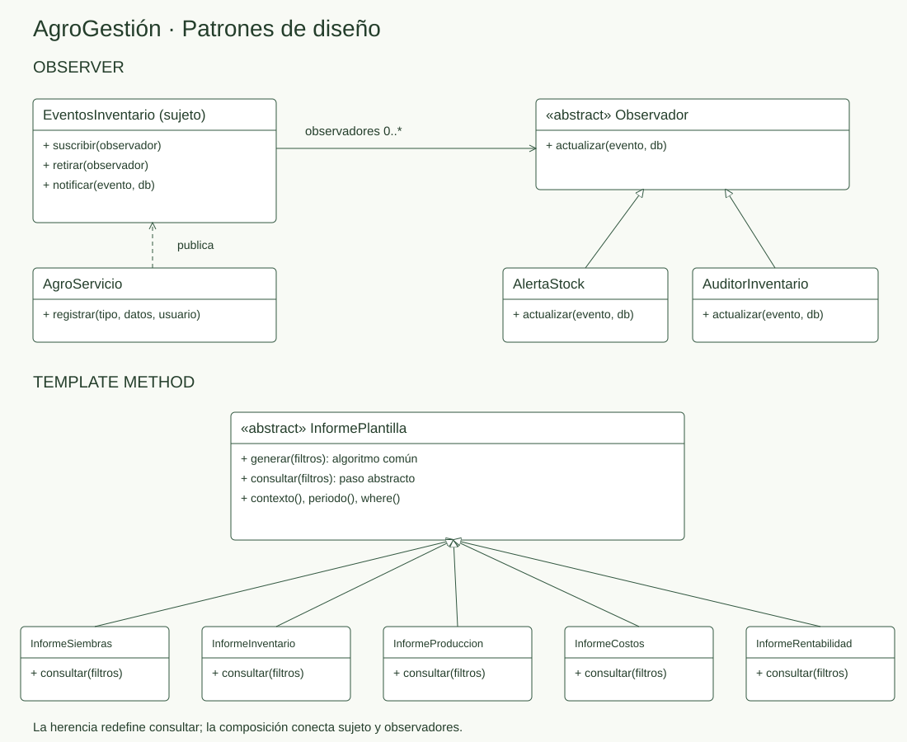

Duván Taboada y Emiliano Martínez · Programación III
Objetivo: demostrar una aplicación funcional y explicar dos patrones de diseño con evidencia en el código. Duración sugerida: 12–15 minutos. Ensayen la demostración con una copia de la carpeta, porque registrar operaciones cambia los datos.

«AgroGestión permite registrar el ciclo productivo de una finca: dónde sembramos, qué insumos usamos, cuánto cosechamos y cuál fue el resultado económico. Implementamos una aplicación web en Python con Flask y base relacional SQLite. Separamos presentación, reglas de negocio y persistencia. Elegimos Observer y Template Method para resolver problemas concretos, no solo para nombrar patrones».
iniciar.cmd. Entrar como admin / Agro2026!. Mostrar panel, dos lotes y la siembra demostrativa.Problema: cuando cambia el inventario, distintas partes necesitan reaccionar. Sin Observer, cada compra o aplicación tendría que conocer y llamar explícitamente todas las reglas de alertas y auditoría.
| Papel | Clase y ubicación |
|---|---|
| Sujeto | core.py: EventosInventario |
| Contrato abstracto | Observador.actualizar() |
| Observadores concretos | AlertaStock y AuditorInventario |
| Publicador | AgroServicio.registrar(), después de compras y aplicaciones |
Compra / aplicación → EventosInventario.notificar()
├── AlertaStock.actualizar() → panel
└── AuditorInventario.actualizar() → historialDemostración: el fertilizante tiene 20 kg y mínimo 25. Mostrar la alerta del panel. Registrar una compra de 10 kg a 3.000 COP/kg. Volver al panel: la alerta de ese insumo desaparece y el evento queda en auditoría. No desaparece la alerta de Semilla de maíz porque continúa en cero.
En el código mostrar suscribir, retirar y el bucle de notificación. Explicar que se puede agregar otro observador, por ejemplo una cola de notificaciones, sin cambiar el sujeto. La suscripción dinámica se verifica en test_suscribir_y_retirar. Los observadores se ejecutan antes del commit: si fallan, la operación se revierte y no queda un stock incoherente.
Problema: los cinco informes repiten validación de filtros, preparación de columnas, totales y mensaje sin resultados. Lo que cambia es la consulta de datos.
InformePlantilla.generar(filtros) 1. Limpiar filtros 2. Validar fechas y rango 3. consultar(filtros) ← paso abstracto 4. Calcular resumen monetario 5. Preparar filas, columnas y mensaje Subclases: Siembras / Inventario / Producción / Costos / Rentabilidad
Abrir core.py y ubicar InformePlantilla.generar y el método abstracto consultar. Después comparar InformeSiembras.consultar con InformeCostos.consultar. Mostrar en app.py cómo la ruta llama a INFORMES[tipo](servicio).generar(...).
Demostración: abrir Siembras, filtrar por cultivo y fechas y exportar a Excel y PDF. Abrir Costos y repetir: ambos siguen el mismo proceso, con distinta consulta. Probar fechas invertidas y una siembra inexistente para mostrar validación y ausencia de resultados.
«Para agregar un informe nuevo creamos una subclase, implementamos consultar y la registramos. No duplicamos generar. Es Template Method porque una clase base fija el algoritmo y las subclases redefinen un paso; no es Strategy, que intercambia un colaborador dentro de un contexto».
/maestros/usuarios: el servidor responde 403.hash_clave usa PBKDF2-HMAC-SHA256, sal aleatoria y 260.000 iteraciones..venv\Scripts\python.exe -m unittest -v y explicar una prueba de cada patrón y la de stock insuficiente con rollback.| Pregunta | Respuesta que deben comprender |
|---|---|
| ¿CRUD es uno de sus patrones? | No. En el SRS se usa como plantilla funcional. Los patrones de diseño de la implementación son Observer y Template Method. |
| ¿Dónde está el polimorfismo? | El sujeto llama actualizar sobre observadores concretos; la plantilla llama consultar sobre cinco subclases. El algoritmo usa contratos, no el tipo concreto. |
| ¿Cómo se calcula el costo promedio? | Valor del inventario actual dividido por stock. Una compra agrega cantidad y valor; una aplicación retira cantidad y el valor proporcional. No se usa el último precio de compra. |
| ¿Qué ocurre si la operación falla? | Las compras/aplicaciones/ventas usan transacciones SQLite; las validaciones y observadores se ejecutan antes del commit. Una excepción revierte los cambios. |
| ¿Por qué SQLite? | Es relacional, persistente y suficiente para la demostración local. El SRS menciona MySQL/PostgreSQL como ejemplos. Un despliegue con mayor concurrencia puede migrar el acceso a datos. |
| ¿Se cumplen HTTPS y disponibilidad? | No se deben prometer en localhost. Son condiciones del despliegue: servidor de producción, certificado, supervisión y respaldos programados. |
| ¿Por qué no borrar registros? | Para conservar historial y relaciones. Los catálogos se desactivan y los movimientos quedan auditados. |
docs/patrones.puml en el editor.